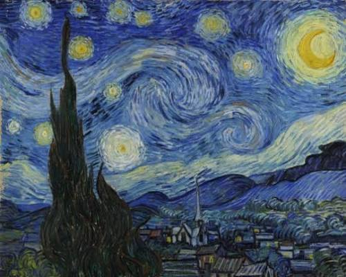

I created this website to display student artwork. I asked students for permission to use their paintings in different styles Acrylic, Watercolor, and Ink. By organizing their work online, I made it possible for everyone to see and appreciate their hard work.